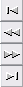

VirtualDub je program pro zachytáváni a zpracování videa pro Microsoft Windows šířený jako open source.
VirtualDUB je možno pluginovat (přidávat další možnosti zpracování videa) a zpracování videa *.avi nedbající na nainstalované kodeky pokud jsou audio a video kodeky nainstalovány. (Taky nechápu, pozn. překladatel.)
Starší verze VirtualDUBu podporovaly nahrávání Microsofťáckých souborů *.asf, ale kvůli softwarovým patentům byla tato možnost odstraněna ve verzi 1.3d a novějších.
VirtualDUB uvádí americký patent 6.041.345 jako jednu ze zbraní pod značku Microsoftu, ale je nemožné jistě vědět, zda-li se tam nevyskytuje víc. V novějších verzích Avery slibuje "legální" podporu pro *.asf soubory přes DirectShow filtry.
VirtualDUB přišel s množstvím filtrů. Například vložené filtry mohou redukovat velikost videa na polovinu, převést video na odstíny šedi a mnohem víc.
Po přidání určitých filtrů můžete uložit video jako sekvenci obrázků. Poté můžete obrázky pozměnit. Také můžete extrahovat zvuk z videa a následně ho upravit. Můžete aplikovat filtry a s jejich pomocí změnit jak zvuk tak video. Zvuk nebo video můžete taktéž zaměnit s jiným nebo zvuk či video přidat.
VirtualDUB dovede použít k tvorbě videa soubory z bitmapových a TGA obrázků. Jednotlivé snímkysi můžete udělat v libovolném grfickém programu (PaintShop, Photoshop nebo Gimp). Obrázky musí být navazující a uoženy jako 001.bmb, 002.bmp, 003.bmp..., a tudíž bez zkoků. Z těchto snímků můžete zvolit počet snímků za sekundu, přidat zvuk a vytvořit jiné modifikace.
VirtualDUB podporuje nahrávání přes directshow a VFW.
VirtualDUB je dostupný ve verzi AMD64 pro Microsoft Windows XP Professional x64 edition.
Takto vypadá okno VirtualDUBu. Možná vás zajímá, co znamená těch třináct tlačítek, dvě černá okna a ta lajna s čísly.
Co je v nabídkách, mám zvlášť.
Tyto tři tlačítka slouží k přehrávání otevřeného videa. Šipka s jedničkou přehraje jen vstupní video, tedy bez vašich úprav. Šipka s nulou přehraje obě videa, takže vidíte vámi provedené změny. Čtvereček přehrávání zastavuje. |
|
|  | S těmito tlačítky se posouváte po časové ose. Krajní šipky vás pusovají na začátek/konec videa, šipky uprostřed vždy o jeden snímek vpřed nebo vzad. |
Tyto tlačítka vás také budou posouvat po videu, avšak nikoli po vteřinách, ale po snímcích. Šipky s klíči posouvají videem po klíčových snímcích. Šipky s červenozeleným obdelníčkem posouvají na další scénu. To je většinou tam, kde byl ve videu proveden střih. |
|
Tyhle dvě tlačítka slouží k výběru části, kterou chcete vystřihnout, zkopírovat a tak. |
Tohle je časová osa, je na ní jezdec (tady uplně vlevo), je rozdělena po snímcích (zde po padesáti), dole ten text znamená, kde je jezdec (Snímek, (Čas) [Druh snímu]).
Dvě černá okna symolizují vstupní (vlevo) a výstupní (pravo) video. Můžete obě okna nezávisle na sobě zmenšit a změnit poměr stran. Co je to "Preferovaný filtr" nevím, neumím to nastavit.
Předchozí: Úvod
Další: Nabídka soubor
Video na PC: Vytvořeno v roce 2005 a víc. Autorem je Jan 'Šlaha' Šlahora. Veškerá práva vyhrazena autorům článků. Pokud není uvedeno jinak, jsem to já.